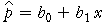

Linear model for age of menstruation
predicted proportion, 
Use this diagram to explain that a linear model predicts proportions outside [0, 1] for extreme values of the explanatory variable.
Drag the vertical red line to see the predicted proportion menstruating for different ages. For ages under 11, the least squares linear model predicts a negative proportion, whereas at ages over 15, the predicted proportion is over 1.
Select Nonlinear model from the pop-up menu and repeat, noting that a nonlinear model is needed to ensure that the predictions are always between 0 and 1.
A study was conducted in Warsaw to determine the proportions of girls who had started menstruating at different ages. A total of 3898 girls of various ages between 8 and 19 were asked whether they had started menstruating.